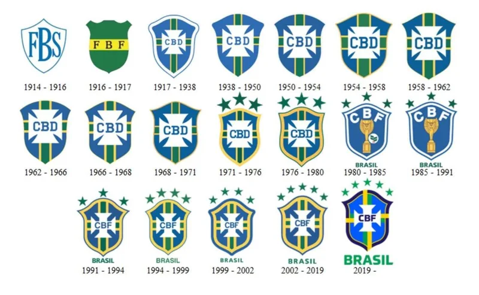
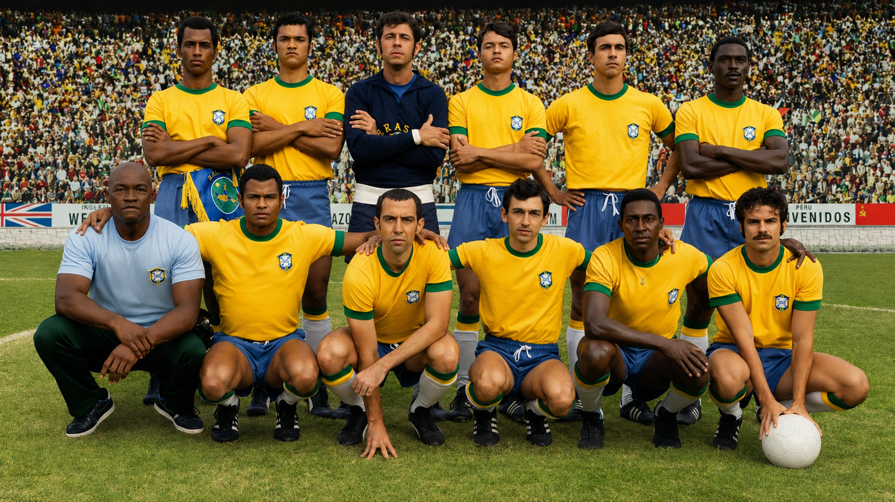
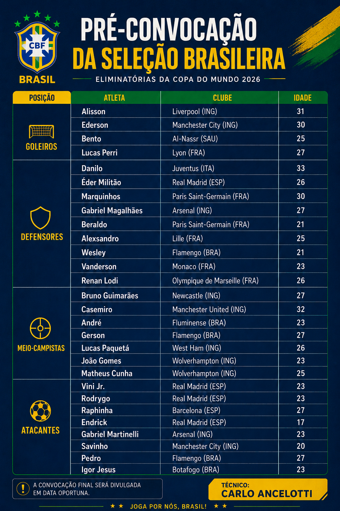

ESCUDOS EXPLICAÇÃO;

1914 – 1917 (Primórdios): Mudança rápida de federações (FBS e FBF), saindo do azul e branco para o verde e amarelo.
1917 – 1979 (Era CBD): Consolidação do formato clássico com a Cruz de Cristo.
Em 1971, surgem as primeiras estrelas (tri).
1980 – 1990 (Transição CBF): A entidade foca só em futebol e o escudo estampa a Taça Jules Rimet em homenagem ao tri.
1991 – Hoje (Modernidade): Retorno ao design clássico, atualização das 5 estrelas e, em 2019, uma repaginada visual com cores mais vivas e fontes modernas.
MELHOR ELENCO!!!

Na opinião dos internaltas conserteza este é o melhor elenco
os cinco melhores jogadores da seleção
1. Pelé: O "Rei do Futebol", único a vencer três Copas do Mundo (1958, 1962, 1970) e maior artilheiro da seleção.
2. Garrincha: O "Anjo das Pernas Tortas", fundamental na conquista do bicampeonato mundial, assumindo o protagonismo em 1962.
3. Ronaldo Fenômeno: Protagonista do penta em 2002 e um dos maiores centroavantes da história, essencial em Copas.
4. Zico: Considerado um dos maiores camisas 10, craque técnico e líder da talentosa seleção de 1982.
5. Romário: Protagonista absoluto na conquista da Copa de 1994, conhecido por sua finalização precisa.
6 extra. Mário Zagallo: Único a vencer a Copa do Mundo como jogador (1958, 1962) e treinador (1970), símbolo da história da seleção.
Quatro pilares da historia da seleção
1.O Início e o Trauma (1914–1950): A Seleção surgiu em 1914, mas o futebol brasileiro só ganhou o mundo após a dor do Maracanazo, a derrota na final da Copa de 1950 em casa. Foi após esse trauma que o uniforme branco foi aposentado pela icônica camisa amarela.
2.A Era Pelé (1958–1970): O Brasil se tornou a maior potência do esporte ao vencer três Copas em 12 anos (58, 62 e 70). Foi a época do "futebol-arte", consolidando Pelé como o Rei do Futebol e o Brasil como o país do "Jogo Bonito".
3.O Jejum e a Retomada (1994–2002): Após 24 anos de espera, o Brasil voltou ao topo com o Tetra (1994), liderado por Romário, e o Penta (2002), com o fenômeno Ronaldo, tornando-se a única seleção cinco vezes campeã mundial.
4.A Busca pelo Hexa (2006–Hoje): Nas últimas décadas, o Brasil mantém o status de favorito e celeiro de craques (como Neymar e Vinícius Jr.), mas enfrenta um jejum de títulos mundiais, marcado por eliminações dolorosas como o 7x1 em 2014.
EXTRA. criada oficialmente em 1914, é a mais vitoriosa da história, sendo a única a participar de todas as Copas do Mundo e vencedora de 5 títulos (1958, 1962, 1970, 1994, 2002)
PRÉ-CONVOVAÇÂO
